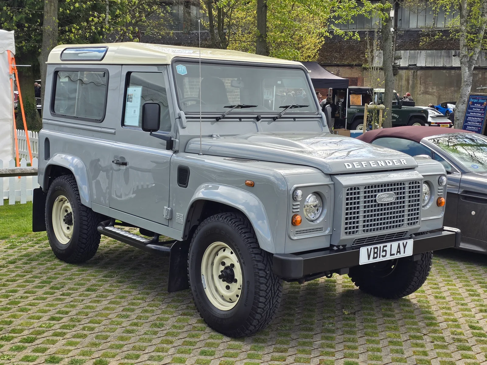
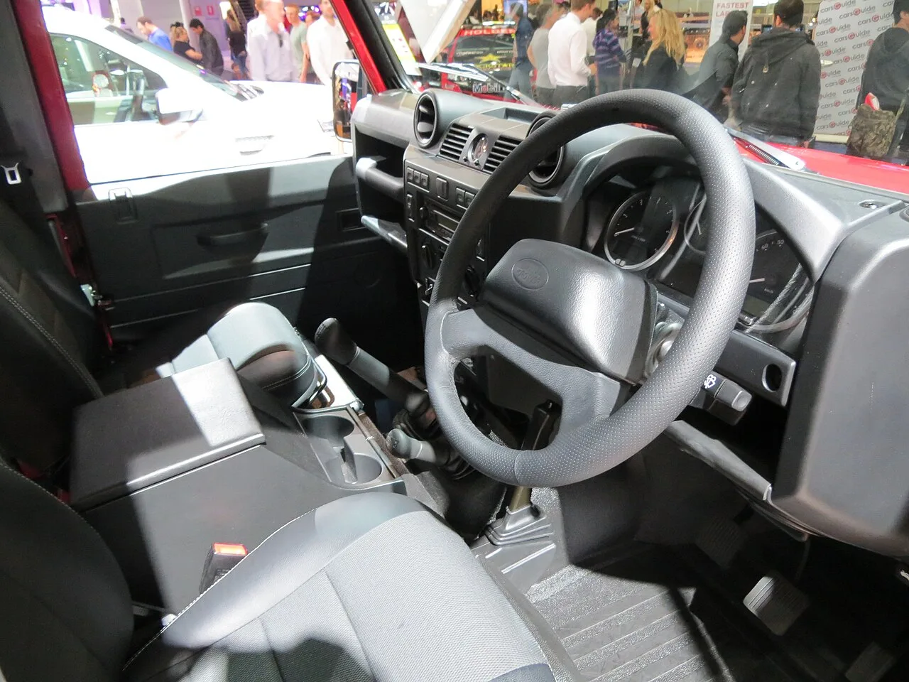
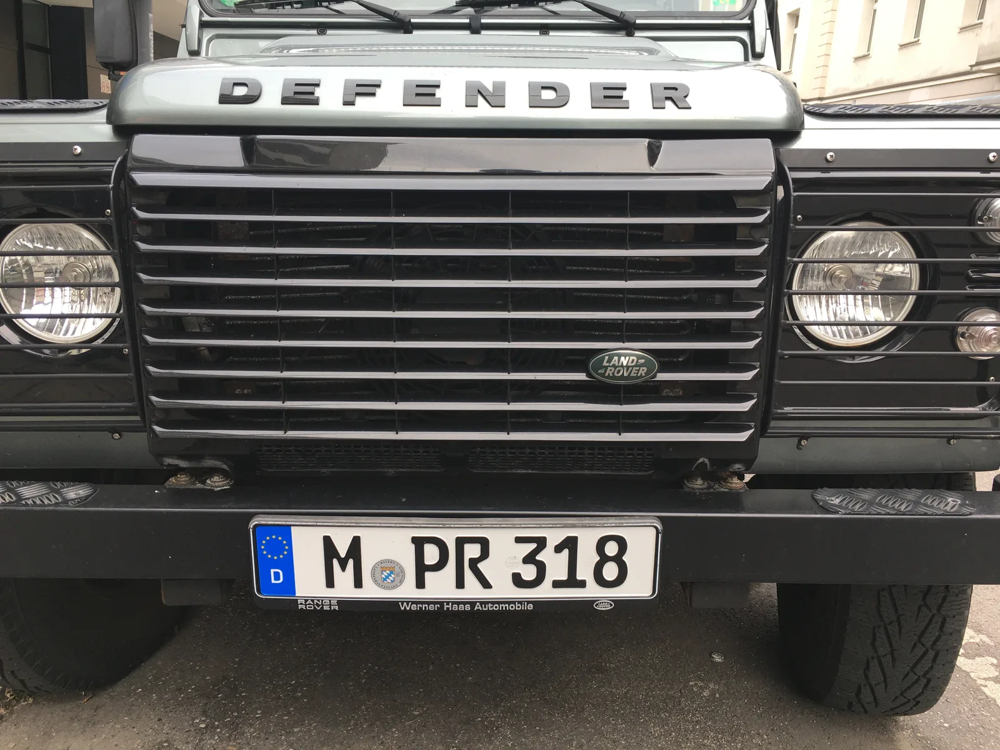
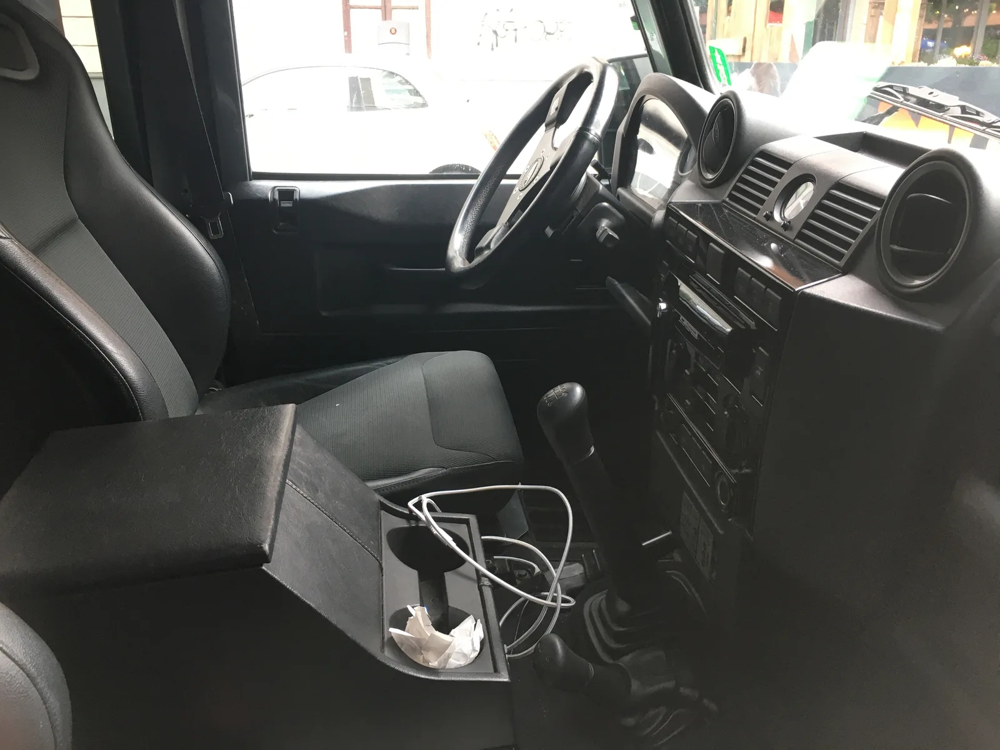
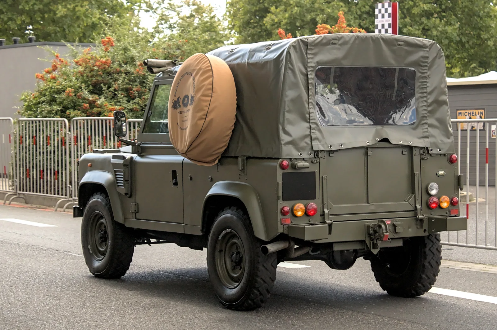
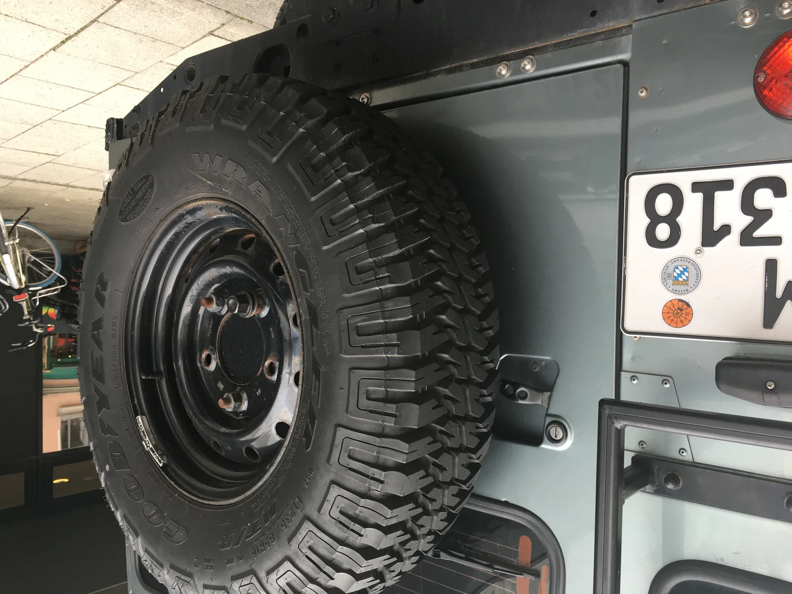

▲ 랜드로버 클래식이 퓨마 시대 디펜더에 405마력 V8을 이식하는 '웍스 V8 컨버전' 프로그램을 정식 공개했다 ⓒ Calreyn88 / Wikimedia Commons (CC BY-SA 4.0)
1990년대~2000년대 감성의 박스형 디펜더에, 이번엔 공식 인증을 받은 진짜 V8이 들어간다.
랜드로버의 헤리티지 부문인 랜드로버 클래식(Land Rover Classic)이 단종된 퓨마(Puma) 시대 디펜더를 대상으로 한 '웍스 V8 컨버전(Works V8 Conversion)' 프로그램을 공개했다. 천연흡기 5.0리터 V8 엔진을 얹어 405마력을 내는 정식 개조 프로그램으로, 서스펜션·휠·브레이크·섀시 하드웨어를 아우르는 더 넓은 업그레이드 패키지의 핵심을 이룬다.
1. '웍스 V8 컨버전'이란 무엇인가
랜드로버 클래식은 이 프로그램을, 마지막 아날로그 디펜더였던 퓨마 세대에 제대로 된 V8을 되돌려주는 시도로 소개했다. 웍스 V8 컨버전은 퓨마 디젤 엔진이 들어갔던 L316 세대 디펜더에 천연흡기 5.0리터 V8을 얹는 것이 핵심이며, 90·110 모델을 대상으로 서스펜션·휠·브레이크·섀시 하드웨어까지 아우르는 더 넓은 업그레이드 프로그램의 일부로 제시됐다.
2. 엔진·파워트레인 — 405마력 천연흡기 V8
이식되는 엔진은 천연흡기(자연흡기) 방식의 5.0리터 V8로, 405마력과 380lb-ft(약 515Nm)의 토크를 낸다. 변속기는 ZF 8단 자동변속기가 매칭된다.
| 항목 | 제원 |
|---|---|
| 엔진 | 5.0리터 V8, 천연흡기(NA) |
| 최고출력 | 405마력 |
| 최대토크 | 380lb-ft (약 515Nm) |
| 변속기 | ZF 8단 자동 |
| 서스펜션 | 빌스타인 댐퍼 + 이바흐 코일 스프링 |
| 브레이크 | 알콘 4피스톤 캘리퍼, 전륜 335mm(13.2인치)·후륜 300mm(11.8인치) 로터 |
| 휠 | 16인치 스틸(기본) 또는 18인치 알로이(옵션) |
새로 나오는 신형 디펜더에도 V8 라인업이 존재하지만, 이쪽은 과급(터보) 방식이다. 랜드로버 클래식이 이번 프로그램에 굳이 천연흡기 V8을 택한 것은, 옛 아날로그 디펜더 특유의 감성을 살리려는 의도로 풀이된다.
3. 어떤 차량이 대상인가 — L316 세대, 그중에서도 좁은 창구
모든 퓨마 시대 디펜더가 V8 스왑 대상은 아니다. 서스펜션·브레이크 등 섀시 업그레이드 패키지는 2007년부터 2016년까지 생산된 90·110 모델 전반에 적용되지만, V8 엔진 이식 자체는 2012년부터 2016년까지, 즉 퓨마 디젤 생산이 끝나기 직전의 마지막 구간으로 좁혀진다. 구형 트럭 오너도 서스펜션·브레이크 업그레이드는 받을 수 있지만, 이 엔진은 적용할 수 없다는 뜻이다.
✅ 대상 범위 한눈에 정리
· 차대: 퓨마 시대 L316 세대 디펜더 90·110
· 섀시·서스펜션·브레이크 패키지: 2007~2016년식 전 구간
· V8 엔진 이식: 2012~2016년식에 한정
· 신형(L663) 디펜더에는 해당 사항 없음

▲ 2012년식 디펜더 90(L316 MY12). V8 엔진 이식 대상 연식(2012~2016년식)의 시작점에 해당하는 모델이다 ⓒ OSX / Wikimedia Commons (Public Domain)

▲ 웍스 V8 컨버전의 대상이 되는 퓨마 시대 디펜더 110(L316)의 전면부 ⓒ Pittigrilli / Wikimedia Commons (CC0)
4. 어떻게 장착하나 — 자가 장착부터 클래식 웍스 정식 시공까지
설치 방식은 두 갈래다. 오너는 랜드로버 클래식 파츠(Land Rover Classic Parts) 웹사이트를 통해 부품을 구매해 직접 장착하거나, 공식 리테일러에 맡겨 설치를 의뢰할 수 있다. DIY 성향의 오너와, 딜러에 맡기고 싶은 오너 모두를 위한 경로를 열어둔 셈이다.
다만 V8 엔진 전체 이식만큼은 예외다. 랜드로버는 이 작업을 반드시 영국과 독일에 있는 클래식 웍스(Classic Works) 시설의 전문 기술진에게 맡기도록 안내하고 있다. 단순 부품 교체보다 훨씬 높은 수준의 관리·감독이 필요한 작업이라는 판단에서다.
📍 가격은 얼마인가
공식 발표에 따르면 최종 대상 여부, 세부 사양, 가격, 일정은 차량의 상태와 기존 사양, 판매 시장에 따라 달라지며, 클래식 전문가나 현지 리테일러의 평가를 거친 뒤에야 확정된다. 정가가 공개된 패키지 상품이 아니라, 차량별 맞춤 견적에 가까운 방식이다.
5. 외관·인테리어는 어떻게 달라지나
디자인 변경은 엔진 스왑과 별도로 구성돼 있다. 휠은 16인치 스틸이 기본이며, 18인치 알로이 휠로 업그레이드할 수 있다. 차량에는 웍스 V8 전용 배지가 붙고, 실내에는 기어터널을 새로 디자인해 적용한다.

▲ 웍스 V8 컨버전에서 기어터널이 새로 디자인되는 L316 디펜더의 실내 ⓒ Pittigrilli / Wikimedia Commons (CC0)

▲ 유럽 클래식카 행사에 전시된 퓨마 시대 디펜더(L316). 이런 개체들이 웍스 V8 컨버전의 주요 대상이 된다 ⓒ Alexander Migl / Wikimedia Commons (CC BY-SA 4.0)
JLR 클래식의 디렉터 도미닉 엘름스(Dominic Elms)는 이 프로그램을 하나의 정해진 사양이 아니라 유연성에 초점을 맞춰 설계했다고 설명했다. 그는 이 라인업이 "애지중지하는 가족용 차량으로든, 믿음직한 일상 작업차로든, 값진 컬렉터의 소장품으로든" 두루 쓰일 수 있도록 만들어졌다며, 매일 타는 차량부터 차고에 고이 모셔두는 개체까지 모두 아우른다고 덧붙였다.

▲ 테일게이트에 예비타이어를 단 디펜더 110(L316)의 후측면. 박스형 실루엣은 웍스 V8 컨버전 이후에도 그대로 유지된다 ⓒ Pittigrilli / Wikimedia Commons (CC0)
6. 요약
랜드로버 클래식이 퓨마 시대 디펜더(L316) 90·110을 대상으로 한 '웍스 V8 컨버전' 프로그램을 공개했다. 천연흡기 5.0리터 V8(405마력·380lb-ft)과 ZF 8단 자동변속기를 이식하는 것이 핵심이며, 빌스타인·이바흐 서스펜션과 알콘 브레이크를 포함한 섀시 업그레이드도 함께 제공된다.
V8 엔진 이식은 2012~2016년식에, 섀시·브레이크 패키지는 2007~2016년식 전반에 적용되며, 엔진 스왑은 영국·독일 클래식 웍스 시설에서만 진행된다. 가격과 세부 사양은 차량 상태와 시장에 따라 개별적으로 정해지고, 공식 정가는 공개되지 않았다.